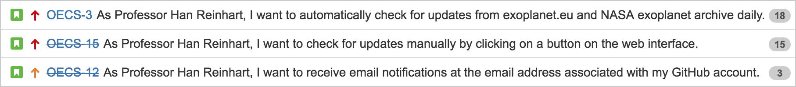

The system has three components: a frontend using HTML and JavaScript, a RESTful API implemented by Flask which is a third-party Python library, and a Python backend for parsing and merging data. The web interface sends requests to the API, then the API invokes backend functions for processing the request. In the backend, we make use of third party MongoDB as database system, in terms of speed at THE running time we decide go for MongoDB for our choice to store and manage all the data from OEC, EU and NASA. On our system backend, first of all our data_downloader will download the target file and parse into xml on the local disk, then convert to JSON file and imported to the MongoDB. We use pymongo module in python to communicate with MongoDB. Whenever there is request for data exporting then we use same tool to convert data into xml from the MongoDB. This way leaves us enough space not to concern much about xml formatting.
Throughout the process, we found it is not realistic to implement some features that is nice to have. For example, feature like compare differences between two and show where the differences are. The way to implement it is just too costly for us. GitHub pretty much have all those features. So for out all product backlog starting from this deliverable will focus on implementing merge without any bugs and front end API work efficiently. We need to make sure basic feature like parsing data and merging from different formatting data is working completely fine. Then start from there we could start develop more feature.
As our project progressed from deliverable 3 to deliverable 4. We made a few changes in our original plan. We re-planed to add a user interface into the release. For deliverable 3 we worked on backend to satisfy the basic requirements. In deliverable
4, we focused more on the front end. We developed the user interface and also fixed with some technical issues like improving the compare function and merge function.
We did the code inspection and fixed bugs. The estimated velocity was supposed to be 56 story points, but because members had assignments and term tests to work on this week. We did not end up finishing GitHub accept and reject functions. The actual
velocity is 36 story points. We are moving theses unfinished functions to the next release.
A replanning happened during this sprint. The replanned Sprint Backlog is the following:
Name of reviewer: Wentao Sui
Code under review: github.py
Date of review: Nov. 13, 2016
Author of code: Andrew Wang